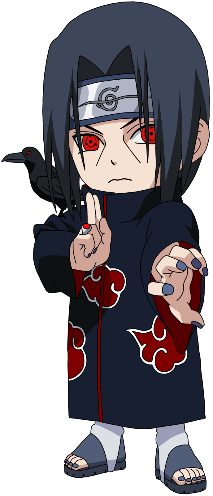

Itachi Uchiha foi um dos membros mais proeminentes do clã Uchiha e um dos antagonistas principais da série Naruto. Ele era conhecido por sua genialidade como ninja e por seu Sharingan, que lhe concedia várias habilidades poderosas.
O passado de Itachi Uchiha é complexo e cheio de tragédia. Ele foi forçado a tomar decisões difíceis em nome do bem maior, incluindo a aniquilação de seu próprio clã para evitar uma guerra civil. Essas ações levaram à sua fama como traidor, mas a verdade por trás de seus atos só foi revelada mais tarde.
Itachi era um ninja habilidoso, versado em várias técnicas de ninjutsu e genjutsu. Ele dominou o uso do Sharingan e do Mangekyou Sharingan, permitindo-lhe ler os movimentos de seus oponentes, manipular suas percepções e até mesmo lançar poderosos ataques ilusórios.
Apesar de suas ações questionáveis no passado, Itachi era movido por um senso de dever e amor por seu irmão mais novo, Sasuke. Ele trabalhou secretamente nos bastidores para proteger Sasuke e a Vila Oculta da Folha, deixando pistas e desafios para ajudar no crescimento de Sasuke como ninja.
© 2023 Akatsuki. Todos os direitos reservados.